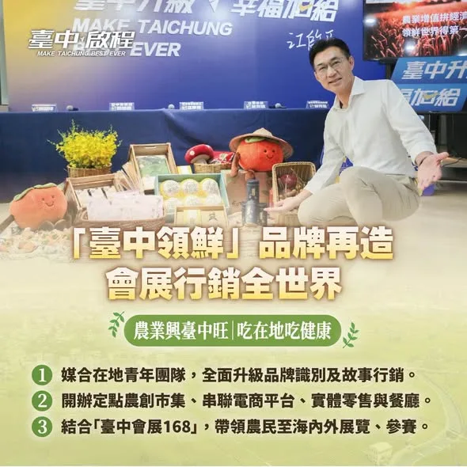

農業興、臺中旺，吃在地、吃健康🌾 #臺中農產外交官 啟程！推廣 #臺中好味 出國際 農業是城市的生命力，你們的辛苦，請讓啟臣來分擔！在盧市長的基礎上，我們推動「啟臣挺農業五大行動」。 啟臣會啟動 #臺中領鮮品牌再造，行銷全世界；推動免費營養午餐，優先採購在地契作農產，為農民創造穩定通路。面對極端氣候，我們產學合作、導入AI，打造 #智慧農業臺中隊；升級 #臺中農易通APP 提供病蟲害辨識，並建置 #農業災害預警 細胞簡訊，助農友提早防範降農損。 農民朋友，你們不是一個人在面對風險。啟臣身為農家子弟，會與大家共同努力，請大家安心耕作、驕傲收成，讓我們一起打造 #農業旗艦城 ，讓臺中農業的響亮招牌，越發光彩✨ #臺中啟程 #打造旗艦城 #臺中味 #TaichungWay #健康味 #農業興 #臺中旺 #吃在地 #吃健康 #幸福臺中